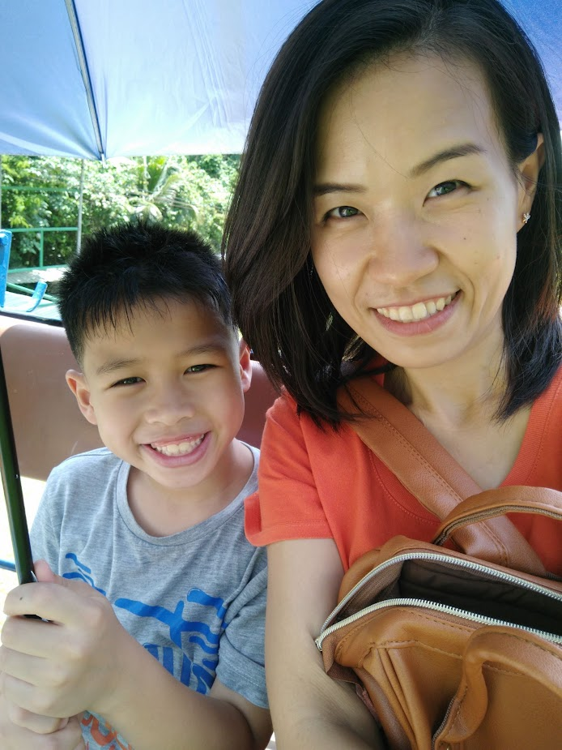
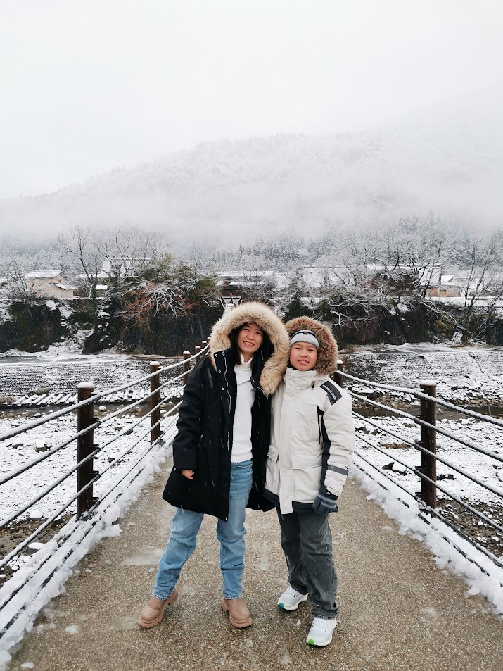
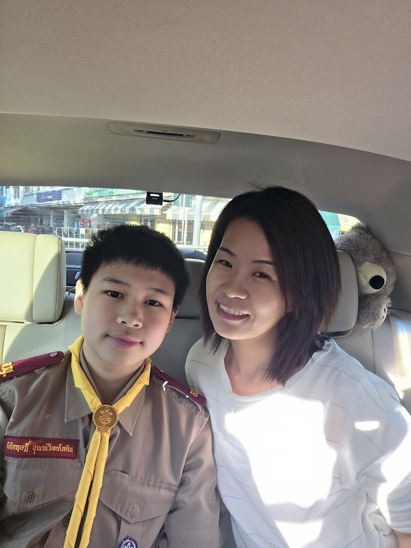

วันแม่แห่งชาติ
สิ่งที่อยากบอกแม่
แม่ของ เกิดวันที่ 15 กันยายน อายุ 40 ผมรักแม่มากนะครับ ที่ผ่านมาผมอยากขอบคุณแม่มากนะครับที่รักและผมดูแลผมมาตลอด แม้ตอนที่ผมโกรธ เสียใจ แม่ก็จะอยู่กับผมเสมอ
 
บทกลอนมอบให้แม่
รักของแม่ตราตรึงใจประทับใจมอบชีวิตเลี้ยงลูกรักจนเติบใหญ่
ขอสัญญาว่าเมื่อลูกนี้โตไป
เป็นผู้ใหญ่เป็นคนดีของสังคม
บทเพลงที่มอบให้แม่